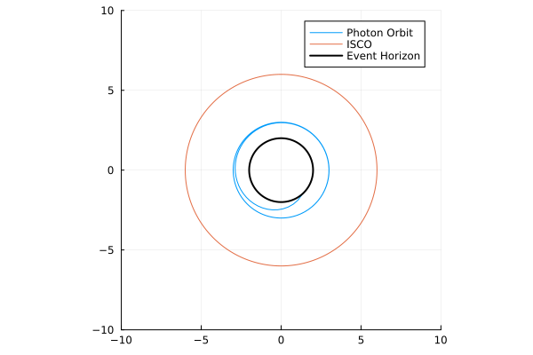
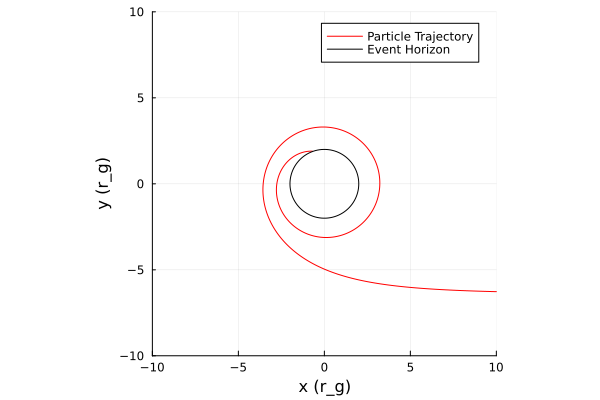
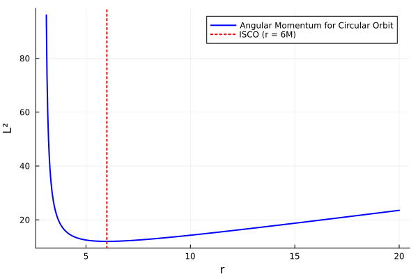
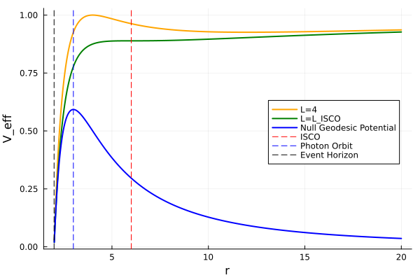
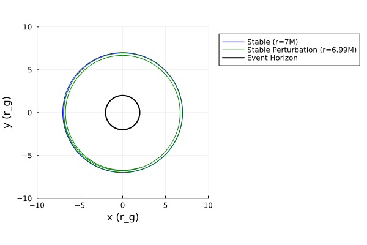
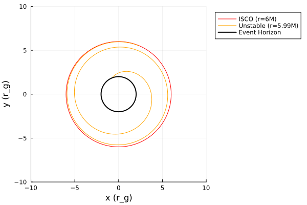
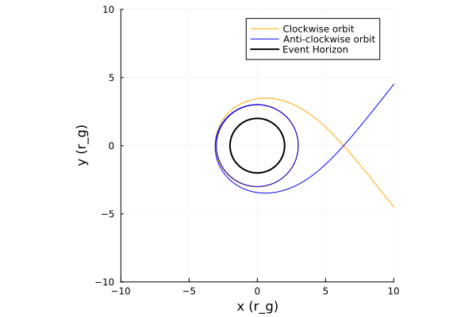
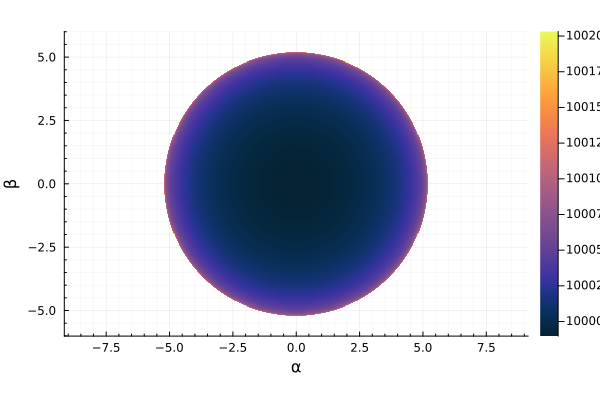

Schwarzschild metric
The Schwarzschild metric describes the geometry of spacetime outside a static, spherically symmetric black hole. It is the simplest solution to Einstein's field equations that isn't the Minkowski metric and is fully characterised by just its mass.
Metric definition
The metric is given by: $ds^{2} = -\left(1-\dfrac{r_s}{r}\right) dt^{2} + \left(1-\dfrac{r_s}{r}\right)^{-1}dr^{2} + r^{2}d\theta^{2} + r^{2}sin^{2}(\theta)d\phi^{2}$
or in matrix form:
\[g_{\mu\nu} = \begin{pmatrix} -\left(1-\dfrac{r_s}{r}\right) & 0 & 0 & 0 \\ 0 & \left(1-\dfrac{r_s}{r}\right)^{-1} & 0 & 0 \\ 0 & 0 & r^2 & 0 \\ 0 & 0 & 0 & r^2\sin^2\theta \end{pmatrix}\]
where
\[r_{s} = 2M\]
Christoffel symbols
\[\begin{aligned} \Gamma^{r}_{tt} & = \frac{r_s (r - r_s)}{2 r^3}, & \Gamma^{t}_{tr} & = \frac{r_s}{2r(r - r_s)}, & \Gamma^{r}_{rr} & = -\frac{r_s}{2r(r - r_s)}, \\[2mm] \Gamma^{\theta}_{r\theta} & = \frac{1}{r}, & \Gamma^{\phi}_{r\phi} & = \frac{1}{r}, & \Gamma^{r}_{\theta\theta} & = -(r - r_s), \\[2mm] \Gamma^{\phi}_{\theta\phi} & = \cot\theta, & \Gamma^{r}_{\phi\phi} & = -(r - r_s)\sin^2\theta, & \Gamma^{\theta}_{\phi\phi} & = -\sin\theta \cos\theta \end{aligned}\]
Riemann-Tensors
\[\begin{aligned} R_{trtr} &= -\frac{ r_s}{r^{3}}, & R_{t\theta t\theta} &= \frac{1}{2} \frac{(r - r_s) r_s}{r^{2}}, & R_{t\phi t\phi} &= \frac{1}{2} \frac{(r - r_s) r_s}{r^{2}} \sin^{2}\theta, \\ R_{r\theta r\theta} &= -\frac{1}{2} \frac{r_s}{r - r_s}, & R_{r\phi r\phi} &= -\frac{1}{2} \frac{r_ssin^{2}\theta}{r - r_s}, & R_{\theta\phi\theta\phi} &= r r_s \sin^{2}\theta \end{aligned}\]
Special radii
Around a Schwarzschild black hole, there are two key orbits with fixed radii. The event horizon has a radius of $r_s$ or $2M$, the photon orbit is at 3M, and the ISCO is at 6M. These orbits are shown in the figure below.
Click to expand / collapse code block.
using Gradus, Plots
m = KerrMetric(M=1.0, a=0.0)
p = plot(aspect_ratio=1)
λ_max = 20000
# Radii
r_photon = 3
r_isco = 6
# Initial positions
x_photon = @SVector [0.0, r_photon, π/2, 0.0]
x_isco = @SVector [0.0, r_isco, π/2, 0.0]
# Circular geodesic velocities
v_photon = CircularOrbits.fourvelocity(m, r_photon)
v_isco = CircularOrbits.fourvelocity(m, r_isco)
path_ph = tracegeodesics(m, x_photon, v_photon, λ_max, μ = 0.0)
path_isco = tracegeodesics(m, x_isco, v_isco, λ_max, μ = 1.0)
# Plot
plot_paths!(p, path_ph, extent = 10, label="Photon Orbit")
plot_paths!(p, path_isco, extent = 10, label="ISCO")
plot_horizon!(m, lw=2, color=:black, label="Event Horizon")
p
Matter inside the ISCO will spiral into the event horizon as shown here:
Click to expand / collapse code block.
using Gradus
# define Schwarzschild spacetime
struct Schwarzschild{T} <: AbstractStaticAxisSymmetric{T}
M::T
end
function Gradus.metric_components(m::Schwarzschild, x)
r, θ = x
M = m.M
dt2 = -(1 - (2M / r))
dr2 = -inv(dt2)
dθ2 = r^2
dϕ2 = r^2 * sin(θ)^2
dtdϕ = zero(r)
SVector(dt2, dr2, dθ2, dϕ2, dtdϕ)
end
Gradus.inner_radius(m::Schwarzschild) = 2 * m.M
m = Schwarzschild(1.0)
x = SVector(0.0, 1000.0, π/2, 0.0)
v = SVector(0.0, -1.0, 0.0, -6.655e-6)
λ_max = 2000.0
sol = tracegeodesics(m, x, v, λ_max, μ=1.0)
using Plots
# plot solution trajectory
fig3 = plot_paths(sol, label = "Particle Trajectory", color = :red, n_points = 10000)
plot_horizon!(m, label = "Event Horizon", color = :black)
xlims!(-10, 10)
ylims!(-10, 10)
Effective Potential
The effective potential of a Schwarzschild black hole is given by:
\[V_{\rm eff}(r) = \left( 1 - \frac{2 M}{r} \right) \left( 1 + \frac{L^2}{r^2} \right)\]
By setting the derivative $\dfrac{dV_{\rm eff}}{dr} = 0$, we can see the condition for a circular orbit:
\[Mr^2 - L^2 r + 3ML^2 = 0\]
Rearranging this for $L$ gives us:
\[L^2 = \dfrac{Mr^2}{r-3M}\]
The denominator $r-3M$ means $L$ diverges when $r=3M$. The minimum of this function occurs at the ISCO radius $(r=6M)$.
The figure below shows the angular momentum required for a circular orbit $(L)$ as a function of radius $(r)$.
Click to expand / collapse code block.
using Plots
M = 1.0
# Radius array (r > 3M to avoid divergence)
r = range(3.1*M, 20M, length=500)
# Angular momentum for circular orbits
L = sqrt.(M * r.^2 ./ (r .- 3*M))
# Plot L vs r
plot(r, L, xlabel="r", ylabel="L", label ="Angular Momentum for Circular Orbit", lw=2, color=:blue)
# Add vertical dotted line for ISCO at r = 6M
vline!([6M], linestyle=:dot, lw=2, color=:red, label="ISCO (r = 6M)")
The value of the angular momentum at the ISCO can be determined by putting r=6M into the above equation for $L$ which gives $L_{\rm ISCO}=2\sqrt3M$. We can then plot the effective potential for different values of $L$ including $L_{\rm ISCO}$. The effective potential for a null geodesic is also shown which has a maximum at $3M$ (the photon orbit radius). The fact it is a maximum means it is an unstable orbit as expected.
The time-like geodesic $(L=4)$ has both a maximum $(r=4M)$ and a minimum $(r=12M)$. This means a particle moving with this angular momentum would form a stable orbit at $12M$ and could potentially form an unstable orbit at $4M$. This unstable orbit radius at $r=4M$ also happens to be the marginally bound orbit where the particle has energy $E=1$.
The ISCO potential line only has one stationary point and it is a point of inflection at $r=6M$. This shows that $L=2\sqrt3$ is the exact point where the circular orbit changes from stable to unstable.
Click to expand / collapse code block.
using Plots
M = 1.0 # Black hole mass
L_val = 4.0 # Angular momentum of particle
L_ISCO = 2*sqrt(3) # Angular momentum at ISCO
# radius array (avoid r = 2M)
r = range(2.01*M, 20M, length=500)
# Schwarzschild effective potential
Veff = (1 .- 2*M ./ r) .* (1 .+ (L_val^2) ./ r.^2)
V_ISCO = (1 .- 2*M ./ r) .* (1 .+ (L_ISCO^2) ./ r.^2)
Vnull = (1 .- 2*M ./ r) .* ((L_val^2) ./ r.^2)
# plot
plot(r, Veff, xlabel="r", ylabel="V_eff", lw=2,
color=:orange, label="L=4", legend=true)
plot!(r, V_ISCO, lw=2, color=:green, label="L=L_ISCO")
plot!(r, Vnull, lw=2, color=:blue, label="Null Geodesic Potential")
# mark ISCO at r = 6M
L_ISCO = 2*sqrt(3)*M
Veff_ISCO = (1 - 2M/6M)*(1 + L_ISCO^2 / (6M)^2)
vline!([6M], linestyle=:dash, color=:red, label="ISCO")
vline!([3M], linestyle=:dash, color=:blue, label="Photon Orbit")
vline!([2M], linestyle=:dash, color=:black, label="Event Horizon")
plot!(legend=:right)
Stable Orbit Pertubation
The plot below shows two orbits. One is at $7M$ and one is pertubated slightly so appears at $6.99M$. Both of these orbits have equal initial velocity. This shows that a slight pertubation to a stable orbit, (one that is outside the ISCO), will not cause it to spiral into the black hole.
Click to expand / collapse code block.
using Gradus, Plots
#Stable and Perturbed Stable orbits
# Schwarzschild black hole
m = KerrMetric(M=1.0, a=0.0)
λ_max = 20000
# Radii
r_stable = 7.0
r_stable2 = 6.99
# Initial velocities
v_stable = CircularOrbits.fourvelocity(m, r_stable) #gives the 4-velocity for a circular orbit at r_stable
v_stable2 = v_stable # Perturbation: same velocity as stable orbit, but at a slightly smaller radius
# Initial positions
x_stable = @SVector [0.0, r_stable, π/2, 0.0]
x_stable2 = @SVector [0.0, r_stable2, π/2, 0.0]
# Trace geodesics
sol_stable = tracegeodesics(m, x_stable, v_stable, λ_max, μ=1.0)
sol_stable2 = tracegeodesics(m, x_stable2, v_stable2, λ_max, μ=1.0)
# Plot
p = plot(aspect_ratio=1)
plot_paths!(p, sol_stable, label="Stable (r=7M)", color=:blue)
plot_paths!(p, sol_stable2, label="Stable Perturbation (r=6.99M)", color=:green)
plot_horizon!(m, lw=2, color=:black, label="Event Horizon")
xlabel!("x")
ylabel!("y")
xlims!(-10, 10)
ylims!(-10, 10) # Set limits to better visualize the orbits and horizon
plot!(p, legend=:outertopright) # Adjust legend position to avoid overlap with trajectories

Unstable Orbit Pertubation
The figure below shows two orbits again, only this time one is on the ISCO and the other has a pertubation such that it is very slightly inside. Now, the one on the ISCO is only just stable and remains circular, but the pertubated one is in the plunging region so it spirals into the event horizon.
Click to expand / collapse code block.
using Gradus, Plots
#ISCO and unstable
# Schwarzschild black hole
m = KerrMetric(M=1.0, a=0.0)
λ_max = 2000
# Radii
r_ISCO = 6.0
r_unstable = 5.99
# Circular geodesic velocities
v_ISCO = CircularOrbits.fourvelocity(m, r_ISCO)
v_unstable = v_ISCO
# Initial positions
x_ISCO = @SVector [0.0, r_ISCO, π/2, 0.0]
x_unstable = @SVector [0.0, r_unstable, π/2, 0.0]
# Trace geodesics
sol_ISCO = tracegeodesics(m, x_ISCO, v_ISCO, λ_max, μ=1.0)
sol_unstable = tracegeodesics(m, x_unstable, v_unstable, λ_max, μ=1.0)
# Plotting
p = plot(aspect_ratio=1)
plot_paths!(p, sol_ISCO, label="ISCO (r=6M)", color=:red)
plot_paths!(p, sol_unstable, label="Unstable (r=5.99M)", color=:orange)
plot_horizon!(m, lw=2, color=:black, label="Event Horizon")
xlims!(-10, 10)
ylims!(-10, 10)
plot!(p, legend=:outertopright)
xlabel!("x")
ylabel!("y")
No Frame Dragging
As Schwarzschild black holes do not spin, the photon orbit and the ISCO will have a constant radius as there is no concept of prograde or retrograde motion. The figure below demonstrates this by showing two photon orbits going round the black hole, clockwise and anti-clockwise at the same radius.
Click to expand / collapse code block.
using Gradus, Plots
#Overlapping prograde and retrograde photon orbits around a Schwarzschild black hole
# Kerr black hole
m = KerrMetric(M=1.0, a=0.0)
λ_max = 2000
# Radii
r_pro = 3.0
r_retro = 3.0
# Circular geodesic velocities
v_pro = @SVector [0.0, 0.0, 0.0, 1.1] #four velocities for circular orbits
v_retro = @SVector [0.0, 0.0, 0.0, -1.1]
# Initial positions
x_pro = @SVector [0.0, r_pro, π/2, 0.0] #starting at the same position
x_retro = @SVector [0.0, r_retro, π/2, 0.0]
# Trace geodesics
sol_pro = tracegeodesics(m, x_pro, v_pro, λ_max, μ=0.0) #μ=0.0 is null geodesic (photon)
sol_retro = tracegeodesics(m, x_retro, v_retro, λ_max, μ=0.0)
# Plotting
p = plot(aspect_ratio=1)
plot_paths!(p, sol_retro, label="Clockwise orbit", color=:orange, n_points = 100000)
plot_paths!(p, sol_pro, label="Anti-clockwise orbit", color=:blue, n_points = 100000)
plot_horizon!(m, lw=2, color=:black, label="Event Horizon")
xlims!(-10, 10)
ylims!(-10, 10)
xlabel!("x")
ylabel!("y")
Shadow Map
A shadow map represents the apparent image of the black hole as seen by an observer viewing background photons, with each point corresponding to a photon trajectory traced backwards from the observer to the black hole. The colour scale indicates the number of integration steps used to trace each photon trajectory. Brighter regions correspond to photons that propagate for a longer duration before either escaping to the observer or being captured by the black hole.
In the plot below, the shadow is a perfect circle because a Schwarzschild black hole is non-spinning and spherically symmetric, so its gravity bends light equally in every direction.
Click to expand / collapse code block.
using Gradus, Plots
m = KerrMetric(1.0, 0.0)
x = SVector(0.0, 10000.0, π / 2, 0.0)
α, β, img = rendergeodesics(
m,
x,
20_000.0,
image_width = 100,
image_height = 100,
αlims = (-6, 6),
βlims = (-6, 6),
verbose = true,
ensemble = Gradus.EnsembleSerial(),
)
p = Plots.heatmap(
α,
β,
img,
color = Plots.cgrad(:thermal, rev = false),
xlabel = "α",
ylabel = "β",
aspect_ratio = 1,
minorgrid = true,
)
